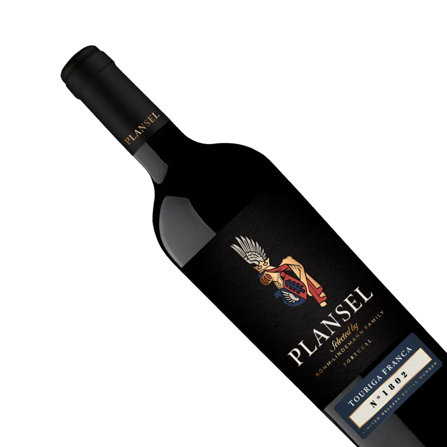
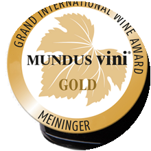
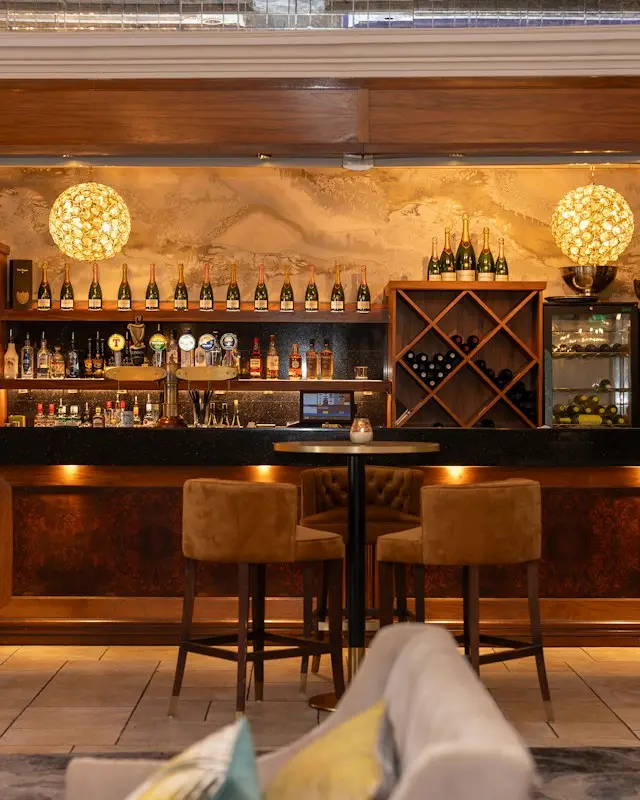
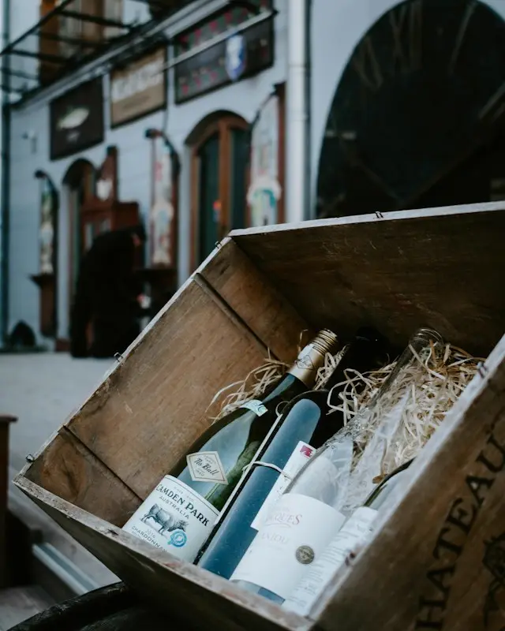
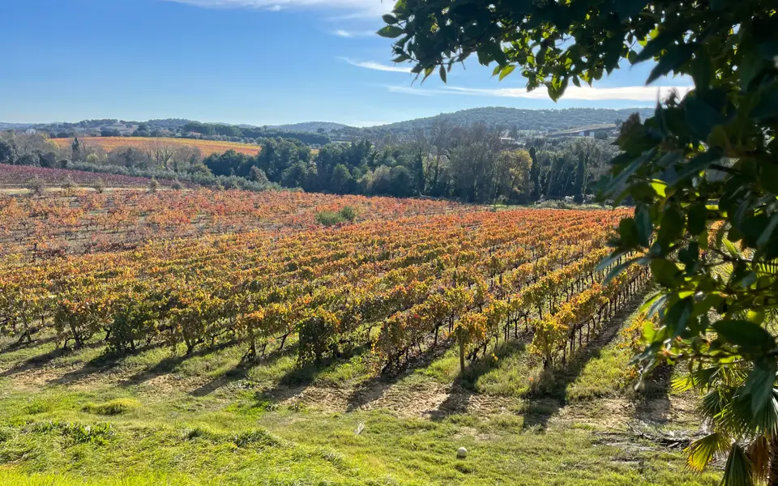
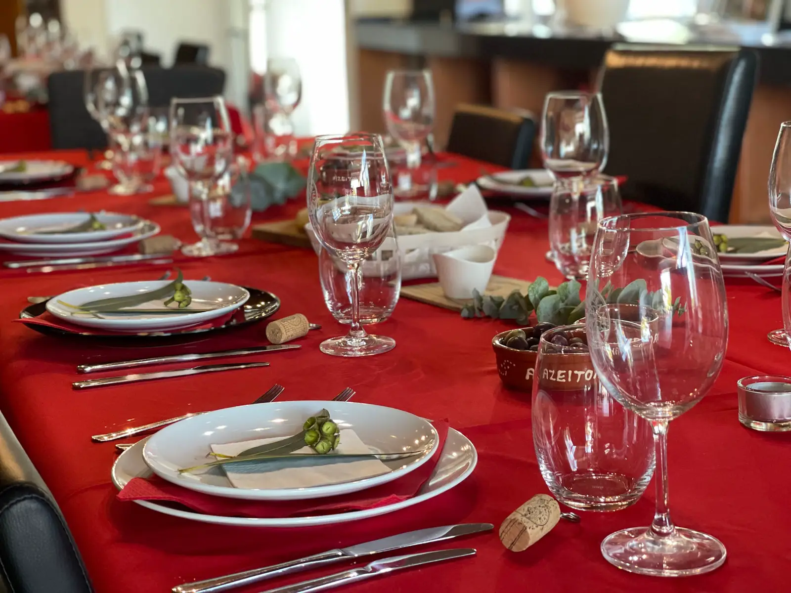
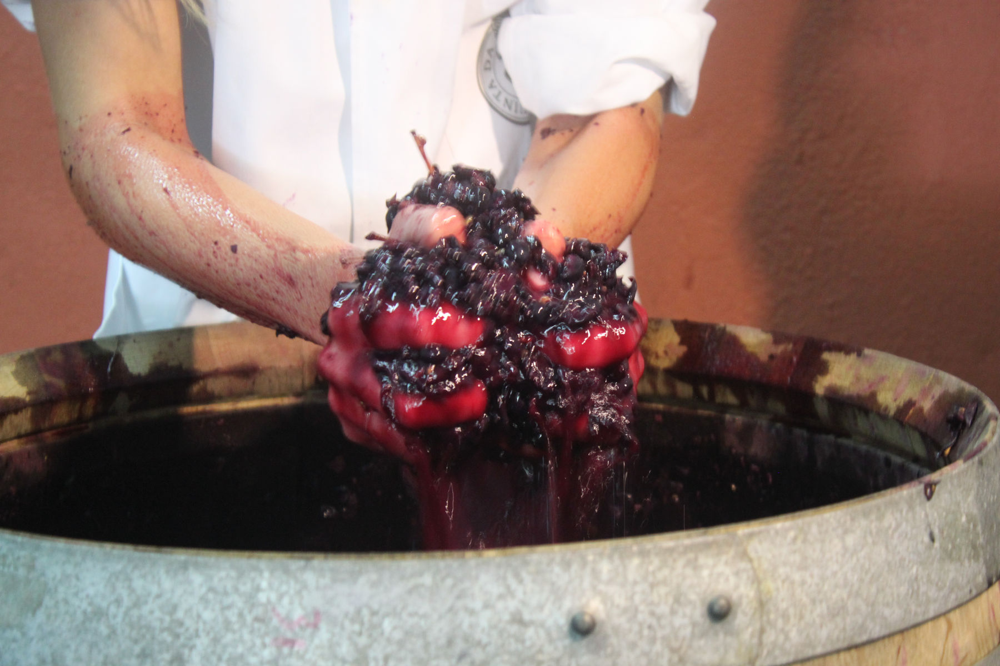

Quinta da Plansel · Alentejo
Vino. Viti. Sapere.
Da 50 anni in mano alla famiglia, dalla vite al bicchiere.

 I nostri prodotti
I nostri prodotti

Tutto Plansel in un colpo d'occhio
Cosa trovi da Plansel.
Dal vino nel bicchiere alla vite nel terreno: un'azienda di famiglia che accompagna le cantine da 50 anni.
- 01Eventi del vinoEventi in Portogallo e all'estero, nuovi ogni settimana.
- 02Acquista vino Plansel onlineRosso, bianco e rosato dall'Alentejo, direttamente dalla tenuta.
- 03Partner, rete & degustazioniShop online B2B e B2C, partner in Germania e Svizzera, degustazioni con ristoranti, hotel e in fiera.
- 04Accademia: Finalmente capire il vinoCorsi WSET secondo lo standard di Londra, riconosciuti a livello internazionale, in portoghese e inglese.
- 05Soggiornare e festeggiare alla QuintaAppartamenti, sosta camper e spazi per matrimoni, aziende e feste, con o senza personale.
- 06Imbottigliamento e consulenzaLe piccole cantine imbottigliano da noi e ricevono consulenza da tre enologi con esperienza tedesca e internazionale.
- 07Vendemmiatrice con autistaVendemmia meccanica per uva e olive: forniamo vendemmiatrici con autista esperto.
- 08Acquista barbatelleViti e cloni certificati da Viveiros Plansel.
- 09Ufficio in outsourcing: IT, marketing, IA e serviziContabilità, Instagram e un sito web con shop per piccole cantine. In più Plansel Technology: applicazioni IA e formazione per i titolari.
 Eventi01
Eventi01
Cosa succede nel vino portoghese questa settimana.
Feste del vino, degustazioni, fiere e consigli sui ristoranti. Aggiornato ogni giovedì, con link diretto all'organizzatore.
Portogallo
- 25 nov 2026 · PortoProva e Jantar Vínico Quinta do VesúvioCena con vini · Matriarca · 19:00
- 25–26 nov 2026 · LisbonaWelcome Drink Quinta do NovalDegustazione · Garrafeira Nacional · 16:00–20:00
- 26 nov 2026 · LisbonaPrats & Symington: ChryseiaConsiglio · Degustazione · Imperial Botânico · 19:00
- 26 nov 2026 · SantarémProva Comentada com Tiago CabaçoDegustazione · Arinto & Touriga · 18:30
- 26 nov 2026 · LisbonaJantar Vínico Quinta da VineadouroCena con vini · Olissippo Lapa Palace · 19:30
- 26–28 nov 2026 · FunchalEssência do Vinho MadeiraDegustazione · Pestana Casino Park
- 26–29 nov 2026 · EstremozCozinha dos GanhõesFestival gastronomico · Parque de Feiras
- 26/27 nov 2026 · Praia da BarraProva de Vinhos Fundação ADFPDegustazione · Binho Wine Bar · 18:00–20:30 · verificare la data
- 27 nov 2026 · OlhãoBonjardim Boutique WinesDegustazione · República 14 · 16:00–20:00
- 27 nov 2026 · PortoMenin Douro EstatesMasterclass · Garrafeira Nacional, Rua das Flores · 18:30
- 27 nov 2026 · AzeitãoJosé Maria da Fonseca: Cave da BassaqueiraCena con vini · Cave da Bassaqueira · 19:00
- 27 nov–1 dic 2026 · PortelFeira do MontadoConsiglio · Sughero
- 28 nov 2026 · LisbonaProvar é Saber: Enchidos e PresuntoDegustazione · Sala Ogival, ViniPortugal · 10:00–13:00
- 28 nov 2026 · LisbonaEnóphilo por um DiaDegustazione · Lagar de São Vicente · 14:00–19:00
- 28 nov 2026 · ViseuWines & SpiritsDegustazione · Pousada de Viseu · 14:30–20:30
- 28 nov 2026 · MadalenaEnologia no Pico: vinhos brancosConferenza · Pico, Açores
- 28 nov 2026 · Vidigueira4 EstaçõesCena con vini · Quinta do Paral · 19:30
- 28 nov 2026 · Vila de FradesVoz, Vinho e HistóriasMusica · Taberna dos Arcos · 21:30
- 28–29 nov 2026 · PortoVinhos no Mercado: Especial de NatalDegustazione · Mercado Ferreira Borges
- 28 nov–1 dic 2026 · LisbonaLisboa Wines FestivalFesta del vino · Time Out Market
- 4–6 dic 2026 · Vila de FradesVITIFRADESConsiglio · Festa del vino
- 4–6 dic 2026 · MelgaçoFesta do Espumante de MelgaçoFesta del vino
- 5 dic 2026 · MadalenaEnologia no Pico: vinhos licorososConferenza · Pico, Açores
- 5–6 dic 2026 · LisbonaFesta do Vinho Independente: Xmas EditionFesta del vino · Praça Beato · 11:00–17:00
- 12 dic 2026 · MadalenaEnologia no Pico: vinhos tintosConferenza · Pico, Açores
- 19 dic 2026 · LisbonaProvar é Saber: AçordasDegustazione · Sala Ogival, ViniPortugal · 10:00–13:00
- 19 dic 2026 · LisbonaFeira de Natal Garrafeira ImperialDegustazione · Imperial Botânico · 16:00–20:00
- 16 gen 2027 · VidigueiraGala Città Europea del Vino 2026Gala
- 29/30 gen 2027 · LisbonaProvar é Saber: Carne de PorcoDegustazione · Sala Ogival, ViniPortugal · 10:00–13:00 · verificare la data
- 5 feb 2027 · PortoOs Melhores do Ano 2026Gala · Alfândega do Porto
- 14–21 feb 2027 · PortoWine & Travel WeekFiera
- 15–17 feb 2027 · LisbonaLisbon Food AffairFiera · FIL
- 18–21 feb 2027 · PortoEssência do VinhoDegustazione · Palácio da Bolsa
- Fine feb 2027 · PortoSimplesmente VinhoDegustazione
- 3–7 mar 2027 · LisbonaBTL Better Tourism LisbonFiera · FIL
- 5–7 apr 2027 · LisbonaSAGALEXPOFiera · FIL
- 21–25 apr 2027 · BejaOvibejaFiera
- 30 apr–2 mag 2027 · MelgaçoFesta do Alvarinho e do FumeiroFesta del vino · Complexo Desportivo Melsport
- 29 mag 2027 · Quinta da PlanselPlansel Rosé Party
- 2–3 lug 2027 · LamegoDouro & Porto Wine FestivalFesta del vino
- 13–19 lug 2027 · Ponte de LimaFesta do Vinho VerdeFesta del vino
- 22 ago–12 set 2027 · FunchalFesta do Vinho da MadeiraFesta del vino · Madeira
- 26 ago–12 set 2027 · MadeiraMadeira Wine LoungeFesta del vino
- 4, 5, 11, 12 set 2027 · MadeiraConcertos nas VinhasMusica
- 11 set 2027 · Estreito de Câmara de LobosVindima ao VivoVendemmia · Madeira
- Metà set 2027 · Peso da RéguaFesta das Vindimas do DouroFesta del vino
Internazionale
- Feb 2027 · ParigiWine Paris
- Mar 2027 · DüsseldorfProWein
- Apr 2027 · VeronaVinitaly
- Primavera 2027 · Neustadt/WeinstrasseMundus Vini
- Mag 2027 · LondraLondon Wine Fair
Consigli sui ristoranti
- ÉvoraRestaurante Fialho
- Vila Nova de MilfontesTasca do Celso
- LisbonaTaberna da Rua das Flores
- PortoProva
- Montemor-o-NovoWine & Dine alla Quinta da Plansel
Calici e sughero
- Vila Nova de GaiaThe Bridge Collection, WOW
- São Brás de AlportelVisita a una fabbrica di sughero
Date senza garanzia. Verifica con l'organizzatore prima di partire.
Segnala un evento
Pubblicità · billboard 970 × 250 · tramite symplr
 Vini02
Vini02
Quinta da Plansel · Vini
Grande vino portoghese. Tracciabile fino alla vite.
Dorina, enologa formata a Geisenheim, fa vino dalle viti del padre dal 1993. Per ogni bottiglia sappiamo da quale clone proviene.


Consiglio dell'IA
Plansel Tinta Barroca
La Tinta Barroca porta frutti scuri e tannini morbidi. Regge bene carne e salse ricche.
Motivazione:Corposo + carne → rosso strutturato
Ordina nello shop
Premiati a Mundus Vini
Degustati alla cieca. Premiati.
Presentiamo regolarmente i nostri vini a Mundus Vini, il concorso enologico internazionale della casa editrice Meininger. Una giuria internazionale degusta alla cieca, senza etichetta e senza nome. Ogni medaglia è quindi un sigillo di qualità indipendente per i vini Plansel.

Quinta da Plansel 25 Anos (1997–2022)Edizione unica- DL Dorina Lindemann Tinto Reserva 20212024
- Plansel Grande Escolha 20192024
 Júlia Lindemann Limited Edition 20192024
Júlia Lindemann Limited Edition 20192024- 6× oro e 5× argento2023
- Plansel Selecta Reserva Branco 20142015

Christoph & Andrea MeiningerDirezione · Casa editrice Meininger
Mundus Vini da Meininger I vini Plansel Reportage dalla Quinta
Dorina e Luísa sono anche degustatrici ufficiali di Mundus Vini.
 Partner, rete & degustazioni03
Partner, rete & degustazioni03
Partner, rete & degustazioni
Così Plansel arriva da te.
Direttamente dal nostro shop online, tramite i nostri partner in Germania e Svizzera, oppure nel bicchiere: a degustazioni, roadshow e fiere.
Per chi lavoriamo
 01RistorazioneRistoranti, wine bar, bar d'albergo, beach club e cateringRichiedi
01RistorazioneRistoranti, wine bar, bar d'albergo, beach club e cateringRichiedi
02HotelCarta dei vini, bar, regalo di benvenuto e negozio dell'hotelRichiedi 03Commercio di vinoEnoteche, garrafeiras, gastronomie, negozi online e duty-freeRichiedi
03Commercio di vinoEnoteche, garrafeiras, gastronomie, negozi online e duty-freeRichiedi 04Ingrosso ed exportDistributori, depositi per la ristorazione, importatori e marchi privatiRichiedi
04Ingrosso ed exportDistributori, depositi per la ristorazione, importatori e marchi privatiRichiedi 05EnoturismoTour operator, tour in Alentejo ed escursioni delle crociereRichiedi
05EnoturismoTour operator, tour in Alentejo ed escursioni delle crociereRichiedi
06Aziende e regaliRegali ai clienti, ricevimenti e bottiglie con etichetta personalizzataRichiedi 07Matrimoni ed eventiSposi, wedding planner, quintas, fiere e festivalRichiedi
07Matrimoni ed eventiSposi, wedding planner, quintas, fiere e festivalRichiedi 08Clienti privatiIn negozio e online, dalla confezione degustazione alla magnumVai allo shop
08Clienti privatiIn negozio e online, dalla confezione degustazione alla magnumVai allo shop
Shop online: per clienti business e privati

B2B
Per rivenditori, ristorazione e grandi acquirenti
Ordina 24 ore su 24 tramite l'accesso B2B nello shop Plansel, ai prezzi concordati in precedenza. Subito dopo l'ordine ricevi la conferma via e-mail e puoi ricontrollare quantità, prezzi e prodotti. Il tuo ordine entra subito nel nostro gestionale.

B2C
Per i privati
Scegli i tuoi vini nello shop e ricevili comodamente a casa, direttamente dalla tenuta in Alentejo.
I nostri partner commerciali
- GermaniaOrbis ViniImportatore con magazzino proprio per i vini Plansel · referente: Kaiorbis-vini.de
- BavieraWolfgang BichelePartner commerciale per la Baviera
- ColoniaEnoteca della famiglia WittlingPropone Plansel e presenta nuovi vini e annate con eventi propri
- SvizzeraPartner in arrivoIl referente sarà indicato qui a breve
- PortogalloQuinta da PlanselDirettamente dalla tenuta a Montemor-o-Novo
Vuoi rappresentare Plansel nel tuo paese o nella tua regione? Diventa partner
Degustazioni, roadshow e fiere
Partner strategici: ristoranti & hotel
Da anni organizziamo con ristoranti e hotel roadshow, degustazioni e presentazioni di nuovi vini. I nostri partner offrono così un'esperienza speciale ai loro ospiti e hanno un buon motivo per invitarli al prossimo evento.
Pianifichiamo un evento insiemeDegustazioni con Dorina & Luísa
Prenotabili a pagamento: veniamo al tuo evento, in hotel o in fiera, in Europa e nel mondo, anche come degustazione-spettacolo. Entrambe sono degustatrici ufficiali di Mundus Vini.
Richiedi una degustazioneIn fiera
Plansel è presente alle fiere di settore, al ProWein di Düsseldorf con un proprio stand. Vieni a trovarci e assaggia le nuove annate.
Appuntamento in fieraRete: Universidade de Évora · INIAV · WSET London · Meininger Verlag
 Accademia04
Accademia04

Plansel International Wine School
Finalmente capire il vino
Corsi WSET ufficiali secondo lo standard di Londra, tenuti dall'educatore WSET Wilmy Matton, dall'enologa Dorina Lindemann e da docenti ospiti. Tra vivaio, laboratorio e cantina.
- WSET Level 1 · WinesIntroduzione per ristorazione e appassionati di vino1 giorno
- WSET Level 2 · WinesVitigni e regioni del mondo3 giorni
- WSET Level 3 · WinesPer aspiranti sommelier5 giorni
- Masterclass PortugalCloni, terroir, cantina. Con l'Archivio Böhm2 giorni
info@planselwineschool.com · +351 266 898 921
 Soggiorni & feste05
Soggiorni & feste05
Enoturismo · Quinta da Plansel
Esperienze top, a un'ora da Lisbona.
Degustazioni in cantina, wine & dine tra le vigne, soggiorni alla quinta e la Plansel Gin Experience.



 Imbottigliamento e consulenza06
Imbottigliamento e consulenza06
Imbottigliamento e consulenza
Imbottigliamento e consulenza, alla Quinta da Plansel.
Le piccole cantine imbottigliano da noi e ricevono consulenza da tre enologi con esperienza tedesca e internazionale.
 Vendemmiatrice07
Vendemmiatrice07
Vendemmiatrice con autista
Vendemmiatrice con autista, per uva e olive.
Vendemmia meccanica per uva e olive: forniamo vendemmiatrici con autista esperto.
 Barbatelle08
Barbatelle08
Viveiros Plansel
Viti certificate dal nostro vivaio.
Dal 1981 Viveiros Plansel innesta viti e cloni di varietà portoghesi. Circa la metà delle viti certificate del Portogallo proviene da cloni Plansel.
 Ufficio in outsourcing09
Ufficio in outsourcing09
Plansel Technology
Portiamo le cantine nell'era dell'IA.
L'IA sta cambiando vendite, marketing e amministrazione più in fretta di quanto una piccola cantina possa seguire da sola. Mettiamo al lavoro per te gli strumenti di Anthropic, Google Gemini e OpenAI e ti mostriamo come funzionano.
La prova è davanti a te: Questo sito usa l'IA in prima persona. Il sommelier consiglia i vini, l'Archivio Böhm risponde a domande tecniche e ogni testo è disponibile in sette lingue.
Richiedi una consulenzaFormazione IA su misura
Per titolari e team, su misura per la tua azienda: lavoriamo con i tuoi vini, clienti e processi. In tedesco, portoghese o inglese, alla Quinta o da te.
- Scrivere prompt che funzionano davvero
- I tuoi assistenti IA per vendite e ufficio
- Protezione dei dati e uso sicuro dell'IA
Applicazioni IA per la tua cantina
- Sommelier IA che consiglia personalmente ogni cliente dello shop
- E-mail e newsletter personalizzate per ogni cliente
- Un agente IA risponde 24 ore su 24 alle richieste di ospiti e prenotazioni
- Descrizioni dei vini, etichette e sito web automaticamente in 7 lingue
- Post e reel Instagram dalle tue foto, con didascalie dell'IA
- Previsioni di vendita e magazzino dai tuoi dati
- Fatture e ricevute vengono lette, controllate e pre-registrate
Outsourcing
Tu fai il vino, noi pensiamo al resto: sito con shop, social media, contabilità. Un unico referente, un prezzo mensile fisso.
 Scienza10
Scienza10
Plansel Science · L'Archivio Böhm
La scienza dietro ogni bottiglia.
Plansel sta per “Plantas Seleccionadas”. Dietro il nome c'è un programma di ricerca che collabora con le università e prepara i vitigni del Portogallo al clima di domani.


“Il Portogallo ha bisogno di una propria ricerca, per non dipendere da varietà che non si adattano al suo suolo e al suo clima.”
Comendador Jorge (Hans Jörg) Böhm, nato nel 1938 a Neustadt an der Weinstraße, proviene da una famiglia tedesca di commercianti di vino. Nel 1961 la sua barca a vela si incagliò vicino a Cascais e si innamorò del Portogallo. Già nel 1969 l'azienda di famiglia sotto la sua guida era il maggiore importatore di vino portoghese in Germania.
Dopo aver studiato miglioramento genetico della vite a Geisenheim, nel 1981 fondò Viveiros Plansel e avviò la prima selezione clonale sistematica dei vitigni portoghesi, con la Universidade de Évora e l'attuale INIAV. Oltre 30 progetti di ricerca dopo, i cloni Plansel sono riconosciuti in California, Nuova Zelanda e Australia, e gran parte dei vigneti del Portogallo cresce su viti Plansel, distribuite da Viveiros Plansel e Vinverus.
Nel 2006 il Presidente della Repubblica Portoghese lo nominò Comendador de Mérito Agrícola.
 Premio OIV 2010
Premio OIV 2010
L'opera di riferimento · Chaves Ferreira, 2007
O Grande Livro das Castas
Il grande libro dei vitigni del Portogallo. Curato dal Comendador Jorge Böhm e premiato dall'Organizzazione Internazionale della Vigna e del Vino (OIV). Descrive le varietà autoctone del paese, da cui nascono anche i vini Plansel.
PT · OriginaleDisponibile
DE · ENTraduzione IA, preordine
FR · ES2027
中文 · PL2027
-
 Novità · 2026Livro Branco das Castas VitícolasNuove varietà resistenti ai funghi: come il Portogallo può usare meno fitofarmaci.
Novità · 2026Livro Branco das Castas VitícolasNuove varietà resistenti ai funghi: come il Portogallo può usare meno fitofarmaci. -
 IngleseThe Portuguese Vineyard and Wine BookStoria, vitigni, terroir, regioni vinicole e abbinamento cibo-vino.
IngleseThe Portuguese Vineyard and Wine BookStoria, vitigni, terroir, regioni vinicole e abbinamento cibo-vino. -
 Dinalivro · 2010D. João, Marquês de Montemor-o-NovoLa storia dietro la nostra linea di vini Marquês de Montemor.
Dinalivro · 2010D. João, Marquês de Montemor-o-NovoLa storia dietro la nostra linea di vini Marquês de Montemor.
2006Comendador de Mérito Agrícola, nominato dal Presidente della Repubblica
2008Miglior esperto di viticoltura, Revista de Vinhos
2 × OIVPremi letterari dell'Organizzazione Internazionale della Vigna e del Vino
2013Targa d'onore, Universidade de Évora
2014Medaglia d'onore, Academia das Ciências de Lisboa
Selezione clonale
Dalle vecchie vigne si scelgono le piante più sane ed espressive e le si propaga.
Varietà resistenti
Viti che richiedono meno fitofarmaci. Böhm lo considera il compito più importante del settore.
Cambiamento climatico
Materiale vegetale per estati più calde e meno acqua, testato in Alentejo.
Varietà antiche
Vitigni portoghesi quasi dimenticati vengono riscoperti e sperimentati nel vino.
Acquista viti e cloni da Viveiros Plansel
Chiedi all'Archivio Böhm
Prototipo IAUn'IA addestrata su 50 anni di ricerca Plansel risponde a domande tecniche nella tua lingua e cita la fonte nel libro. Scegli una domanda di esempio:
Un clone è la discendenza di una singola vite particolarmente buona. Tutte le piante di un clone sono geneticamente identiche. Plansel cerca queste viti nei vecchi vigneti, le testa per anni su salute, resa e qualità del vino e propaga solo le migliori.Fonte:Livro Branco das Castas Vitícolas, cap. Selezione clonale (riferimento di esempio)
 Wine Letter11
Wine Letter11
The Plansel Wine Letter · ogni giovedì
Cinque minuti che ampliano la tua conoscenza del vino.
Gratis, nella tua lingua. Con contenuti della Wine School e dell'Archivio Böhm.
- 01Eventi del vino nel mondo nei prossimi 30 giorni
- 02Appuntamenti del vino in Portogallo
- 03Una cantina della settimana
- 04Ristoranti con una buona carta dei vini e Plansel
- 05Hotel in Portogallo dove si beve Plansel
- 06Una lezione della Wine School
 Famiglia12
Famiglia12
La famiglia Böhm-Lindemann
Una famiglia che vive di vino da generazioni.
Un incidente in mare è diventato l'opera di una vita: tre generazioni hanno trasformato viti, ricerca e cantina nella Quinta da Plansel.
-
Jorge BöhmFondatore, selezionatore di viti, Comendador
-
 DorinaEnologa e cuore della tenuta
DorinaEnologa e cuore della tenuta
-
 JúliaMarketing, social media e finanze
JúliaMarketing, social media e finanze
-
 LuísaEnologia e vendite internazionali
LuísaEnologia e vendite internazionali
- XVIII sec.
La famiglia Böhm commercia vino e diventa uno dei principali importatori di vino della Germania.
- 1961
La barca a vela di Jorge Böhm si incaglia nel porto di Cascais. Rimane, conosce il paese e vede il potenziale dei vitigni dell'Alentejo.
- 1975
Acquista i primi terreni vicino a Montemor-o-Novo. Diventano il vivaio Viveiros Plansel.
- Anni '90
Sua figlia Dorina, enologa formata a Geisenheim, arriva in Portogallo con il marito Thomas Lindemann.
- 1993
Con Paulo Laureano nasce il primo vino nella cantina sperimentale dell'Università di Évora. Il suo nome: Plansel, abbreviazione di “Plantas Seleccionadas”.
- 1998
In cinque anni Dorina e Thomas costruiscono la propria cantina: la Quinta da Plansel.
- Oggi
Le figlie Júlia e Luísa collaborano alla guida dell'azienda. La Quinta produce 400.000 litri all'anno in cinque linee di vini.
- 1975Primi vigneti a Montemor-o-Novo
- ~50 %delle viti certificate del Portogallo provengono da cloni Plansel*
- 50+anni di selezione clonale di varietà portoghesi
- 400.000 ldi vino all'anno dalla Quinta da Plansel
- WSETScuola internazionale del vino nella tenuta
* Dato aziendale Plansel, citato da Vinetur, 9 nov 2026
Fonte: Quinta da Plansel, “A história Lindemann-Böhm” e “A nossa equipa”.
La famiglia Böhm: albero genealogico, Hans Jörg e Dorina Dal 1975: il vivaio Viveiros Plansel